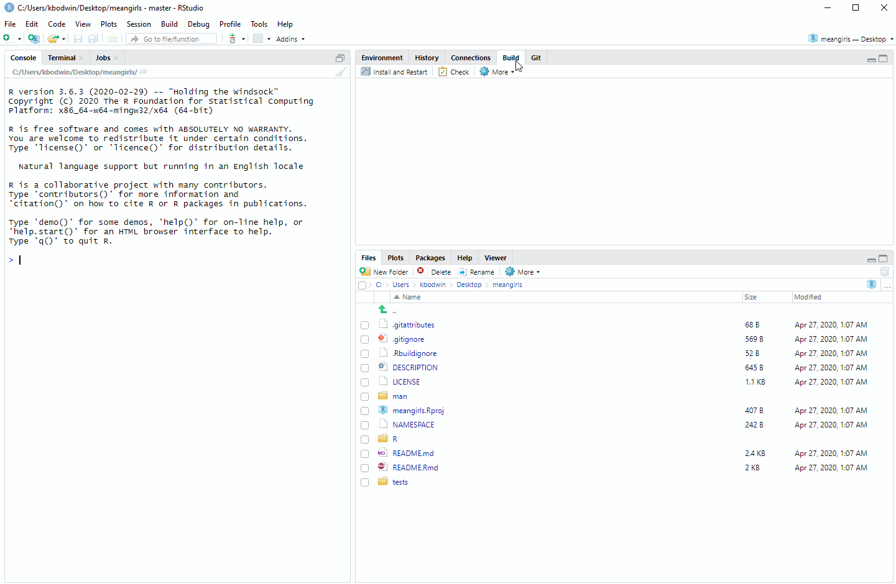
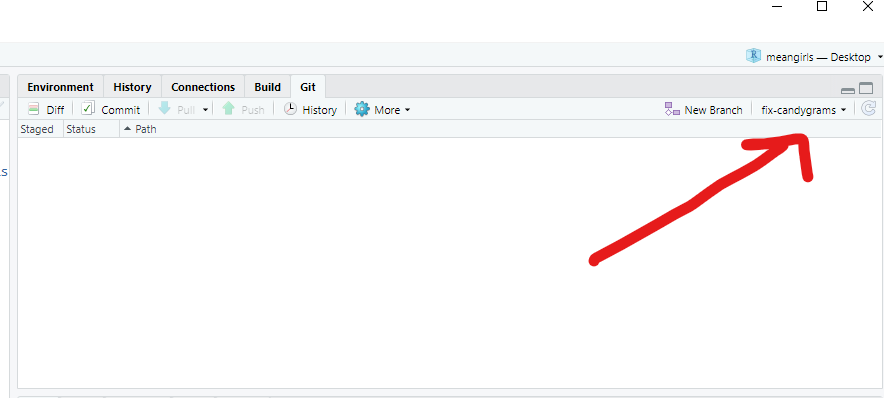
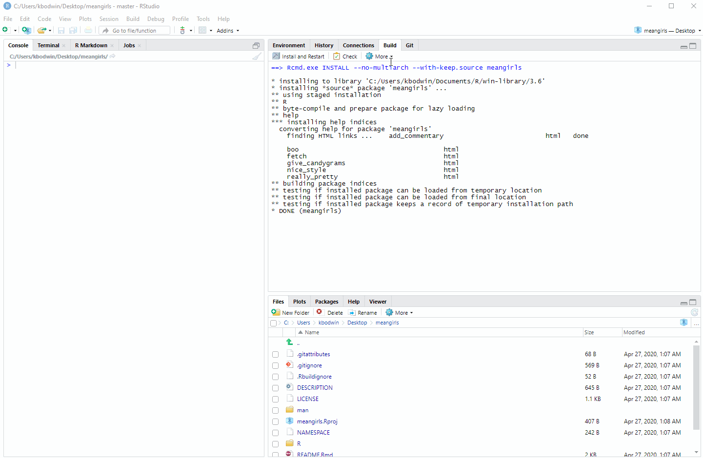
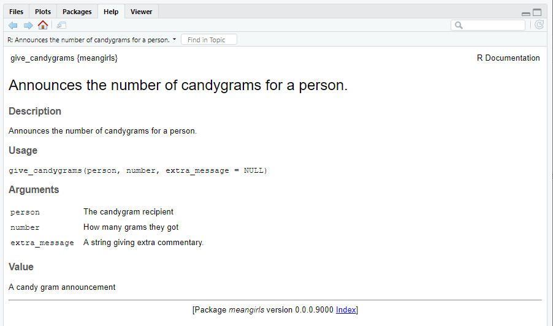
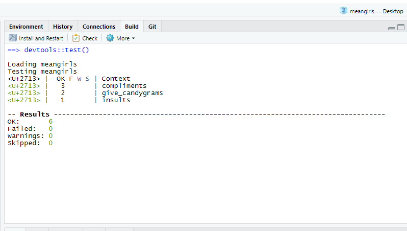

usethis::create_from_github("Cal-Poly-Advanced-R/meangirls")R Packages
Basics of Packages
In principle, an R Package is nothing more than a folder with a very specific structure, which allows R to recognize it as a “Package”. Minimally, to be a package, a folder must contain:
- A subfolder named
/R/, containing.Rcode files. - A text file named
DESCRIPTION, which contains information about the package in a very specifically formatted way. - A text file named
NAMESPACE, which contains a list of the functions that the package makes available.
If you’re thinking to yourself, “Boy, that sounds like a lot of annoyingly specific formatting!” - you’re not wrong. Fortunately, there are automatic ways to make these files, which we will learn about soon!
Any folder with that structure can, in principle, be installed into R as a package. Typically, you will be installing packages from one of three sources:
1. install.packages("something")
If you are able to install a package directly using install.packages(), that means the package has been accepted to the Comprehensive R Archive Network, or CRAN.
The minimal folder structure is not sufficient to be accepted to CRAN; these packages must meet many strict guidelines about documenting and testing the package’s functions.
2. remotes::install_github("username/something")
You may have come across packages you wanted to use that could only be installed using the install_github function (from the remotes package).
In principle, anyone can put a package-structured folder on GitHub, and if the repository is public, anyone else can install that package.
In practice, it’s good to have your package meet CRAN-like levels of careful documentation before you share it with the public.
3. Installing from your personal sources
If you use R heavily in the future, you may find it useful to write packages just for yourself. For example, if you find yourself using the same small “helper” functions over and over, it can be nice to simply load a package rather than re-run them for every project.
We won’t worry about installing from sources for this class.
ImportantCheck-In: Package Structure
Visit this GitHub repository, where our good friend Regina George has made a package.
Answer the following questions about Regina’s package by clicking around in her files.
- What is the name of this package?
- Besides Regina, who is listed as an author of this package?
- Which other packages does Regina’s package depend on? (Hint: Which packages does this one import?)
- Which functions are defined in the file
insults.R? - In the documentation comments above the functions, what does
@paramindicate? - In the documentation comments above the functions, what does
@importFromdo? - Look at the functions defined in the file
give_candygrams.R. One of them does NOT appear in theNAMESPACEfile. What is different about the documentation comments for this function? - Why do you think Regina decided not to include the function from Q7 in her namespace?
Contributing to Packages
Now let’s help Regina make her meangirls package even better.
The usethis package will make this process easy and foolproof. Make sure you have it installed now.
Get set up
The first thing you need to do when you want to contribute to someone else’s package is to fork the package. Recall that a fork is very different from a clone. A clone simply copy-pastes the repository, while a fork retains its link to the original repository.
Now, we could go through the tedious process of forking the repository, then all the steps after that to get it open in your local computer’s RStudio.
Instead, let’s do all these steps in one with usethis. Open up a new RStudio session, load the usethis package, and then run:
A lot of output will print out.
Here’s what this does:
Forks the
meangirlsrepo, owned byCal-Poly-Advanced-Ron GitHub, into your GitHub account.Clones your forked repo into a folder named “meangirls” on your desktop (or similar).
-
Does additional git/GitHub setup:
- Sets your origin remote (the repo you can push directly to) to be your own forked copy of the “meangirls” repo.
- Sets your upstream remote (the original version that you will later Pull Request) to be the “meangirls” repo owned by
Cal-Poly-Advanced-R - Sets the main branch to be the original repo’s main branch, so you can pull future edits that Regina makes (“upstream changes”) in the future.
Opens a new instance of RStudio in the
meangirlsR project.
It is also possible to do this steps without usethis::create_from_github, if you prefer.
On GitHub, navigate to the package repo and click “Fork”.
Using GitHub Desktop (or your preferred method), clone your new forked package to your local machine.
Navigate to the folder where you cloned the package, and open the
.Rproj.
Make some simple changes
We are now ready to get our hands dirty with this package.
First, build the package. You can do this by typing Cmd/Ctrl-Shift-B, or by clicking in the “Build” pane:

Open up README.Rmd and knit it. Scroll to the very bottom. Do you see a problem with the output?
It’s time to fix the give_candygrams() function so that it includes extra messages. But first, we need to make a branch of our repo, so that when we change the code, it is carefully tracked separately.
In your console, type:
usethis::pr_init("fix-candygrams")This will switch you to a new branch.

Now, we can finally edit the source code.
Fix the code in give_candygrams.R so that the extra messages print out properly. (Hint: This is a small change in only one line of the code!)
Check that the code is fixed by re-building the package, re-knitting the README.Rmd file, and looking at the output at the bottom.
When you are satisfied with your change, commit your changes to Git.
Then run in the console:
usethis::pr_push()This will magically pop up a Pull Request window! Complete the Pull Request if you wish.
Testing the package
Last, let’s check out the unit tests in Regina’s package.
In any package, it’s very important to write automatic tests to check that your functions work the way you hope. As the package gets more complex, you can then keep running your tests to make sure nothing broke along the way.
Run the tests that Regina has written for her package by typing Ctrl/Cmd-Shift-T; or from the drop-down menu in the Build pane:

Oh no! One of the unit tests failed.
In the folder tests/testthat, find the appropriate test file. Figure out how the actual output was different from the expected output.
Start a new pull request branch using usethis::pr_init(), as you did above. Track down the error, and make changes to the function. Keep trying until alltests succeed.
Make a major contribution
When handing out candygrams, Santa has a whole classroom of students to announce.
It would be tedious to have to call the give_candygrams() function once for each student. Instead, it would be convenient to have a vector of student names and a vector of candygram counts, and run a single function like so:
Write the function
give_many_candygrams()into themeangirlspackage.Do your best to copy the documentation style of the
give_candygrams()function. TypeCtrl-Shift-D, or use the Build pane drop-down menu, to automatically write a documentation file for your function.Re-build the package. Then type
?give_many_candygramsin your console.Look at the “Help” pane that pops up. It should look like this, except with the documentation for your new
give_many_candygramsfunction:

Type in your console:
use_test("give_many_candygrams")Edit the file that pops up, to create a unit test for your new give_many_candygrams function. Re-run the tests for the package. It should look like this, but with a total of 7 tests:

ImportantCheck-In: Contributing to a Package
- Which line would NOT be correct in the documentation for
give_many_candygrams?
@param person The candygram recipient.@param number How many grams they got.@param extra_message A string giving extra commentary.@param Value A candy gram announcement.
- Consider the following unit test for
give_many_candygrams:
What would you expect to happen for this test?
- It would pass because
- It would pass because
- It would fail because
- It would fail because
Package Creation From Scratch
Required-readingRequired Reading
R Packages Chapter 1 - The Whole Game
For now, just read through this chapter and do your best to figure out the check-in questions below. Your Practice Activity this week will be to actually follow along with the steps in this chapter and create a working package - so you are welcome to get a head start if you wish!
ImportantCheck-In: Package Workflow
- Match the following helper packages to their usage in package creation.
roxygen2testthatdevtoolsusethis
Automatically creating and editing package files in the proper format.
Loading, documenting, and running checks for the package after you make edits.
Creating small unit tests for the functions in the package.
Creating function documentation pages from comments in
.Rfiles.
In a
test_thatfunction, what is the difference betweenexpect_equalandexpect_error?Which of the following files should you never open and edit by hand, instead of generating changes automatically during documentation or with a
usethisfunction? (Select all that apply.)
DESCRIPTIONNAMESPACEREADME.Rmd- Any
.Rsource file in theR/folder. - Any
.mddocumentation file in theman/folder - Any
test-*.Rfile in thetests/testthat/folder